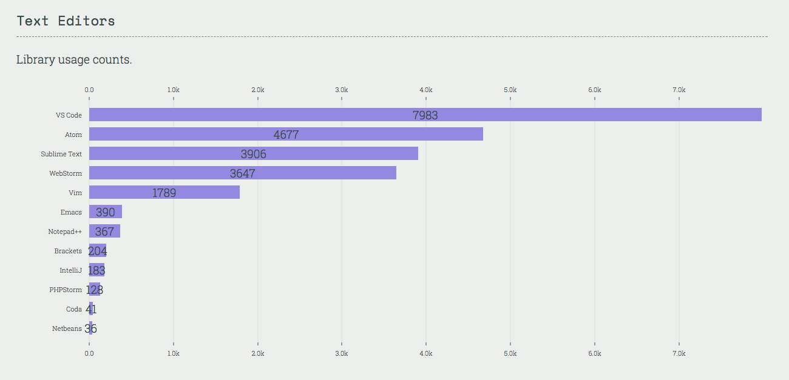

代码编辑工具
源代码编辑器是一个专门为程序员编辑计算机程序源代码而设计的文本编辑器程序。它可能是一个独立的应用程序，也可能内置于集成开发环境（IDE）或 Web 浏览器中。源代码编辑器是最基本的编程工具，因为程序员的基本职责就是编写和编辑源代码。
— 维基百科
前端代码可以通过简单的文本编辑应用程序（如记事本或文本编辑）进行最低限度的编辑。但是，大多数前端从业者使用专门设计用来编写编程语言的代码编辑器。
可以说，代码编辑器有各种类型和大小。从中选择一个是相当主观的决定。选择一个，从头到尾的学习，然后学习 HTML、CSS、DOM 和 JavaScript。
然而，我坚信，代码编辑器应该至少具有以下特性（默认提供或通过插件提供）：
- 关于如何使用编辑器的良好文档
- 对 HTML、CSS 和 JavaScript 的代码质量进行报告（即提示/语言分析/错误）。
- 为 HTML、CSS 和 JavaScript 提供语法高亮显示。
- 为 HTML、CSS 和 JavaScript 提供代码补全。
- 通过插件系统进行定制
- 提供大量的第三方/社区插件库，可用于根据自己的喜好自定义编辑器
- 小而简单，并且不与代码耦合（即不需要编辑代码）
代码编辑器: 1
- Atom
- Sublime Text [$]
- WebStorm [$]
- Visual Studio Code
在线代码编辑器:
- PaizaCloud [免费 $]
- AWS Cloud9 [$]
- Codeanywhere [免费 $]
可共享运行的代码编辑器：
用于共享有限数量的可立即运行的代码。不是真正的代码编辑器，而是一种可用于在 Web 浏览器中共享少量可立即运行的代码的工具。
- CodePen [免费 $]
- jsbin.com [免费 $]
- jsfiddle.net
- StackBliz
- codeSandbox
建议:
1 我推荐使用 Visual Studio Code，因为该工具的质量很好，而且对编辑器的持续改进也不会停止或减慢，因为 Microsoft 是该工具的支持者。它被广泛使用：
